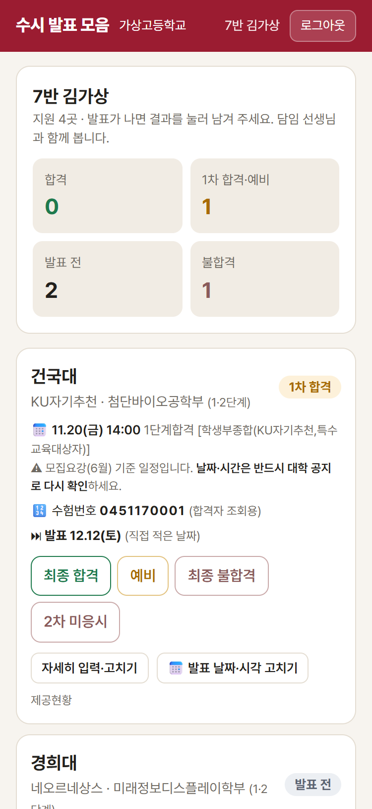
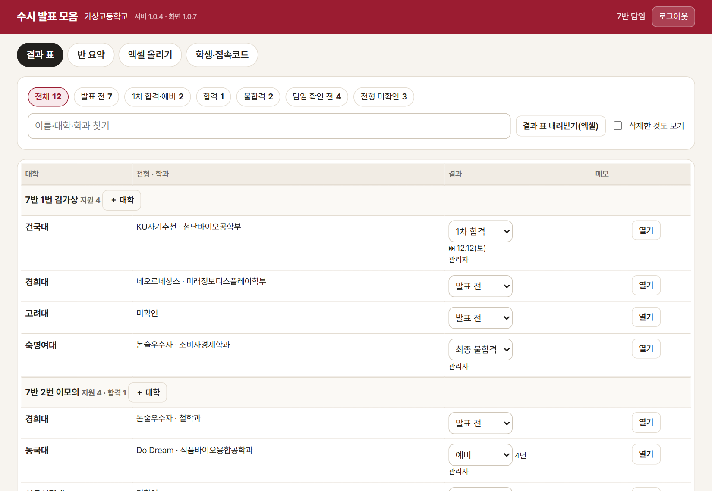
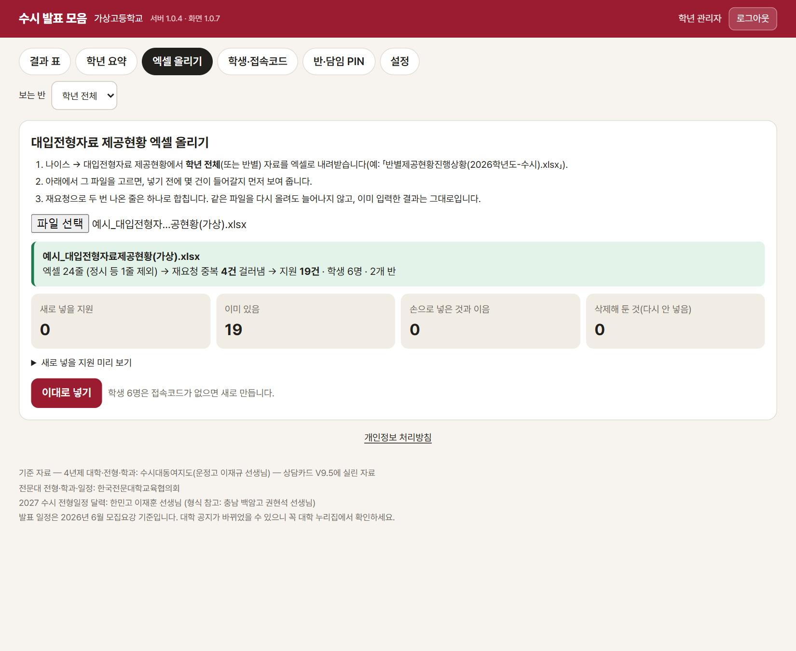
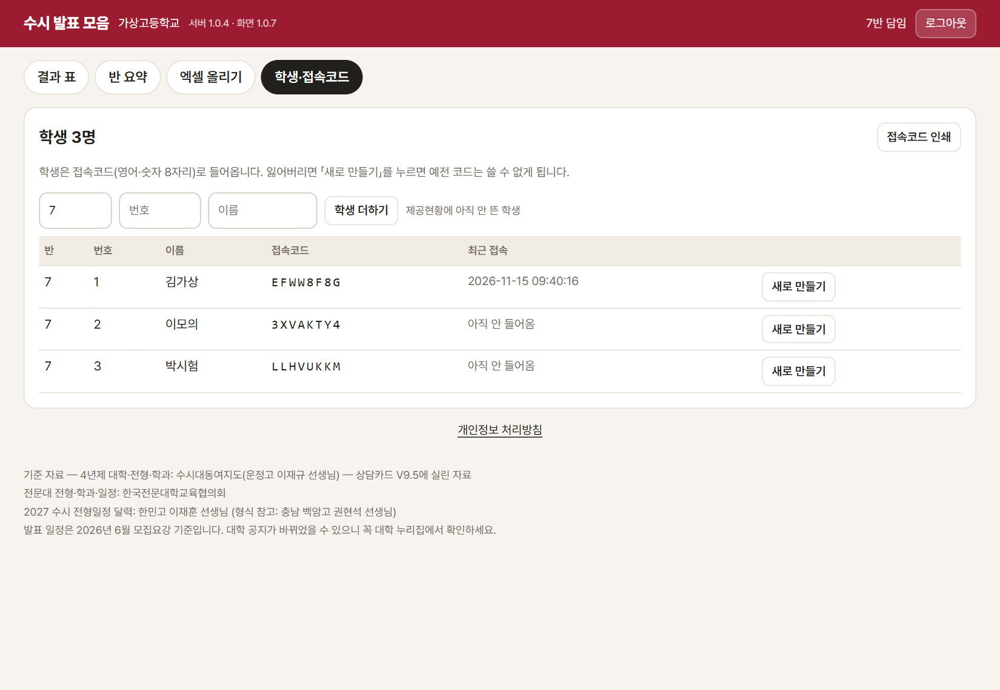
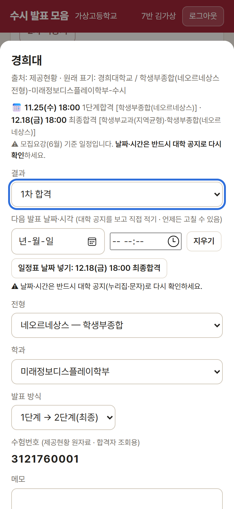
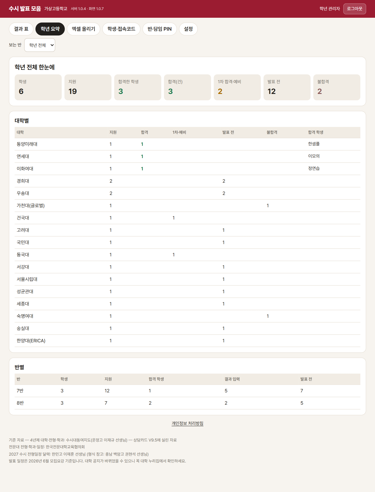
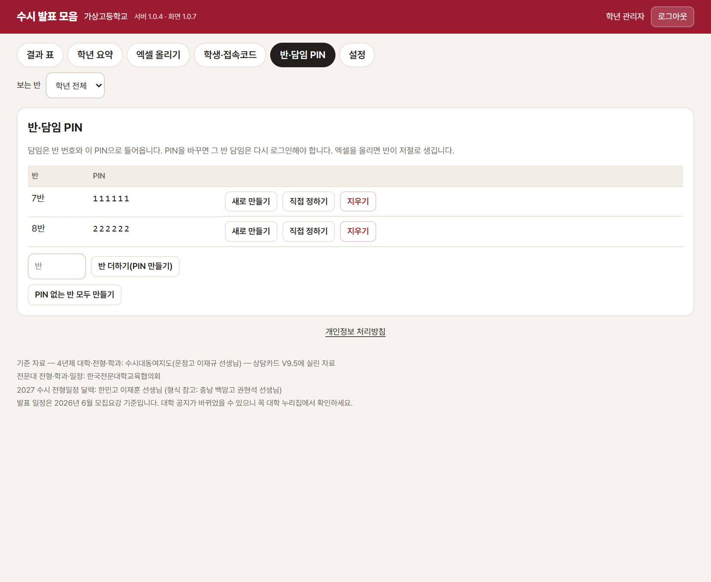
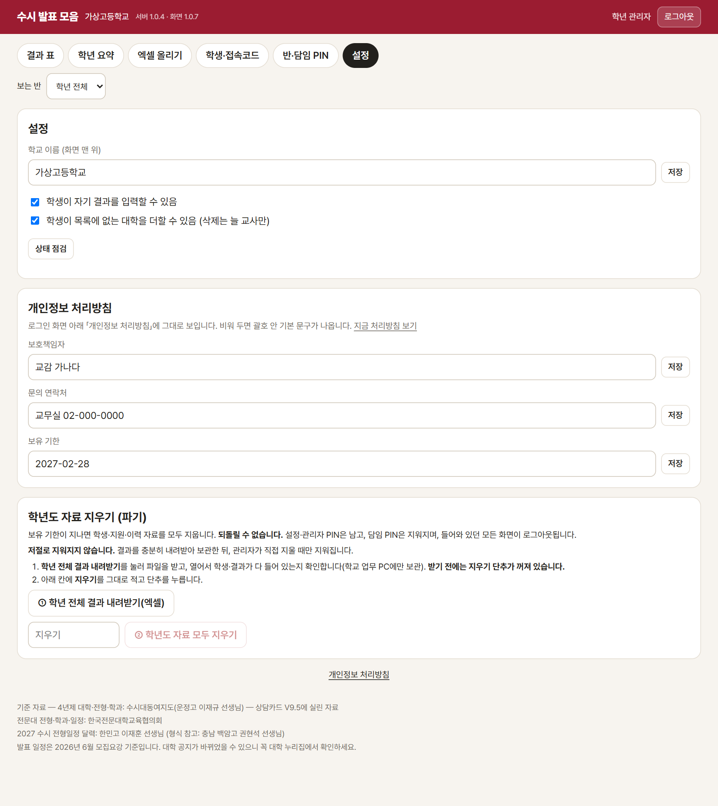

1. 어떤 앱인가
수시 원서를 다 쓰고 나면 대학이 나이스로 학생부를 받아 갑니다. 그 기록이 「대입전형자료 제공현황」이고, 엑셀로 내려받을 수 있습니다(담임은 자기 반, 학년 담당·학년부장은 학년 전체). 이 엑셀을 넣으면
- 학생별 실제 지원 대학 목록이 저절로 만들어집니다. 상담 때 계획과 달라졌어도 실제로 낸 원서 기준입니다.
- 재요청 때문에 두 번 나온 줄은 하나로 합칩니다.
- 대학 이름·평가단위명을 기준 자료(수시대동여지도)와 맞춰 전형·학과·발표 방식(1·2단계 / 한 번에)을 미리 붙이고, 이재훈 선생님 달력의 발표 일정(날짜·시각)을 보여 줍니다. 일정은 6월 모집요강 기준이라 화면마다 "날짜·시간은 반드시 대학 공지로 다시 확인" 문구가 붙고, 학생·담임이 발표 날짜·시각을 직접 적거나 고칠 수 있습니다.
- 발표가 나면 학생이 직접 또는 담임이 결과를 누릅니다. 담임은 반 표로, 학년부장은 학년 전체 요약으로 봅니다.
- 제공현황에 뜨지 않는 곳(사관학교·경찰대·KAIST 등)은 학생·담임이 더할 수 있고, 삭제는 교사만 합니다.
수시상담카드와는 별개의 앱입니다. 상담카드를 쓰지 않은 학교도 이 앱만 설치해서 씁니다.


2. 설치 학년부장·학년 담당 1회혼자 쓰는 담임
- 학년부장·학년 담당이 설치(권장) → 학년 전체가 시트 하나에 모입니다. 학년 전체 엑셀을 올리고, 담임에게는 반 번호 + 담임 PIN을 줍니다. 담임은 자기 반만 보고 고칩니다. 학년 요약(대학별 합격자·반별 입력 상황)을 볼 수 있습니다.
- 담임이 혼자 설치 → 우리 반만 쓰는 사본이 됩니다. 설치한 담임이 관리자 PIN으로 들어가 우리 반 엑셀을 올리면 됩니다(담임 PIN은 만들지 않아도 됨).
- 같은 학교·학년에서 학년부장과 담임이 따로 사본을 만들면 자료가 서로 합쳐지지 않습니다. 학년에서 누가 설치할지 먼저 정하세요.
약 10분 걸립니다. 구글 계정 하나로 합니다. 이 계정의 드라이브에 학생 자료가 쌓입니다. 학교 업무용(워크스페이스) 계정은 학교 설정에 따라 4단계의 「모든 사용자」를 고를 수 없을 수 있습니다 — 그러면 학생이 들어오지 못하니, 개인 구글 계정으로 사본을 만드세요(8장).
- 원본 스프레드시트 사본 만들기 — 사본 만들기 주소를 열고 사본 만들기를 누릅니다. 내 드라이브에 「수시 발표 모음 (원본)의 사본」이 생깁니다. 이름은 바꿔도 됩니다(예: 2027 3학년 수시 발표).
- 처음 설정 — 사본을 열고 잠시 기다리면 위 메뉴에
수시 발표 모음이 생깁니다.① 처음 설정을 누르면 「승인 필요」 창이 뜹니다. 「확인」(또는 「계속」) → 계정 선택 → 「Google에서 확인하지 않은 앱」 화면이 나오면 왼쪽 아래 「고급」 → 「수시 발표 모음 …(으)로 이동(안전하지 않음)」 → 「허용」. 내가 만든 사본의 코드라 이렇게 표시되는 것이 정상입니다. 허용이 끝나면 관리자 PIN(6자리) 알림이 뜹니다(안 뜨면① 처음 설정을 한 번 더 누르세요 — 여러 번 눌러도 PIN과 자료는 그대로입니다). 학년부장만 알고 있어야 하는 번호입니다(메뉴 「관리자 PIN 보기」에서 다시 볼 수 있음). - 웹앱 배포 — 메뉴
확장 프로그램 → Apps Script→ 오른쪽 위 파란배포 → 새 배포→ 「유형 선택」 옆 톱니바퀴 → 웹 앱 → 「다음 사용자 인증 정보로 실행」: 나, 「액세스 권한이 있는 사용자」: 모든 사용자 → 「배포」(권한을 다시 물으면 2단계처럼 허용). 나오는 웹 앱 URL(…/exec)을 복사해 둡니다. 학생·담임이 들어올 주소입니다. - 관리자로 들어가기 — 웹 앱 주소 → 「학년 관리자」 → 관리자 PIN.
- 엑셀 올리기 — 「엑셀 올리기」에서 학년 전체 제공현황 엑셀을 올립니다(3장). 반·학생이 저절로 생깁니다.
- 담임 PIN 만들기 — 「반·담임 PIN」 →
PIN 없는 반 모두 만들기. 각 담임에게 웹 앱 주소 + 반 번호 + PIN을 알려 줍니다.
배포 → 배포 관리 → 연필 → 버전: 새 버전 → 배포로 같은 주소를 갱신합니다. 「새 배포」를 누르면 주소가 바뀝니다.3. 엑셀 올리기와 중복 거르기 학년부장담임
- 나이스에서 「대입전형자료 제공현황」을 엑셀로 내려받습니다. 파일 이름 예:
반별제공현황진행상황(2026학년도-수시).xlsx - 앱의 「엑셀 올리기」에서 그 파일을 고르면 넣기 전에 몇 건이 들어갈지 보여 줍니다. 설치 직후 연습해 보려면 가상 학생 예시 엑셀을 올려 보세요(연습 뒤에는 「결과 표」에서 지우거나, 스프레드시트를 새로 사본 받아 시작).
- 숫자를 확인하고
이대로 넣기.

중복은 이렇게 거릅니다
- 대학이 자료를 다시 받아 가면(재요청) 같은 지원이 엑셀에 두 줄로 나옵니다. 같은 학생 · 같은 대학 · 같은 수험번호면 한 건으로 셉니다. 수험번호가 없으면 평가단위명으로 봅니다.
- 한 대학에 전형을 여러 개 냈으면 수험번호가 달라서 각각 따로 들어갑니다(예: 같은 대학 논술과 학종).
- 모집시기가 「정시」인 줄은 넣지 않습니다.
다시 올려도 안전합니다
- 같은 파일이나, 나중에 받은 더 큰 파일을 올려도 이미 있는 지원은 늘지 않고, 입력한 결과·메모는 그대로입니다. 새로 생긴 지원만 더해집니다.
- 교사가 삭제한 지원은 다시 올려도 되살아나지 않습니다(「삭제한 것도 보기」에서 되살릴 수 있음).
- 학생이 먼저 손으로 더한 대학이 나중에 엑셀에 나오면, 새로 하나 더 만들지 않고 그 지원에 이어 붙입니다(입력한 결과 유지).
- 담임이 학년 전체 파일을 올려도 자기 반 줄만 들어갑니다.
「전형·학과 미확인」이 생기는 경우
일부 대학은 평가단위명이 수시·수시모집뿐이라 어느 전형인지 엑셀만으로 알 수 없습니다. 이런 지원은 대학 이름만 들어가고 「전형·학과 미확인」으로 표시됩니다. 학생(또는 담임)이 카드를 눌러 목록에서 전형·학과를 고르면 됩니다. 목록에 없으면 「직접 적기」.
4. 담임이 할 일 담임
- 웹 앱 주소 → 「담임」 → 반 번호 + 담임 PIN.
- (학년부장이 아직 안 올렸으면) 「엑셀 올리기」에서 우리 반 제공현황 엑셀을 올립니다.
- 「학생·접속코드」 →
접속코드 인쇄→ 잘라서 학생에게 나눠 줍니다. 단톡방·구글 클래스룸에는 웹 앱 주소와 학생용 안내 주소만 올리고(아래 안내문), 코드는 따로 줍니다. - 발표 시기에는 「결과 표」에서 반 전체를 봅니다. 위 칩으로 발표 전 / 1차 합격·예비 / 합격 / 불합격 / 담임 확인 전 / 전형 미확인만 골라 볼 수 있습니다.

- 결과 바꾸기: 표의 결과 칸에서 바로 고르면 저장됩니다. 1차 합격·예비·추가 합격은 다음 발표일·예비 번호·차수를 적는 창이 열립니다.
- 수험번호: 「열기」 창에 보입니다(합격자 조회용). 제공현황에서 온 것은 고칠 수 없고, 손으로 더한 대학은 적고 고칠 수 있습니다.
- 발표 날짜·시각: 「열기」 → 「다음 발표 날짜·시각」에 직접 적거나 고칩니다(「일정표 날짜 넣기」 단추로 채운 뒤 고쳐도 됨). 표의 결과 칸 아래에 ⏭ 로 보입니다.
- 담임 확인: 「열기」 → 「담임 확인」 체크. 학생이 결과를 다시 바꾸면 확인 표시가 풀립니다(「담임 확인 전」 칩으로 모아 보기).
- 대학 더하기: 학생 이름 옆
＋ 대학. - 삭제: 「열기」 → 「삭제」. 학생 화면에서 사라지고, 시트에는 '삭제' 표시로 남습니다(되살리기 가능).
- 내려받기:
결과 표 내려받기(엑셀)→ 엑셀 파일(.xlsx)로 받습니다. 시트 셋: 지원별 결과(결과별 색·첫 줄 고정·필터) / 학생별 요약(학생마다 합격·1차·예비·발표 전·불합격 대학) / 대학별(지원·합격 수와 합격 학생). 가상 자료 예시 파일 - 엑셀에 없는 학생: 「학생·접속코드」의 「학생 더하기」(반·번호·이름).
[수시 발표 결과 입력 안내] 발표가 나면 아래 주소에서 결과를 눌러 남겨 주세요(1분이면 됩니다). · 입력 주소: ○○○ · 접속코드: 오늘 나눠 준 종이의 영어·숫자 8자리 (친구에게 알려 주지 마세요) · 그림으로 보는 사용법: https://thecozyforest.github.io/susi-result-board-guide/student.html 1차 합격·예비·추가 합격이면 다음 발표일·예비 번호·차수도 적어 주세요. 제공현황에 없는 대학(사관학교·경찰대 등)은 화면 맨 아래에서 직접 더하면 됩니다.
5. 학생이 할 일 학생
학생에게는 그림으로 된 학생용 안내를 보내면 됩니다. 요약하면:
- 담임 선생님이 알려 준 주소 → 「학생」 → 접속코드(영어·숫자 8자리).
- 내 지원 대학이 카드로 보입니다. 카드 아래 📅는 그 대학·전형의 발표 일정(모집요강 기준)입니다.
- 발표가 나면 카드의 단추를 누릅니다. 1·2단계 전형은 1차 합격/1차 불합격부터, 한 번에 발표하는 전형은 최종 합격/예비/최종 불합격부터 보입니다.
- 1차 합격·예비를 누르면 예비 번호 등을 적는 창이 열립니다. 카드의 「📅 발표 날짜·시각 적기」로 대학 공지에서 본 다음 발표 날짜·시각을 적고 고칠 수 있습니다(「일정표 날짜 넣기」 단추로 채운 뒤 확인). 날짜·시간은 반드시 대학 공지로 다시 확인합니다.
- 목록에 없는 대학(사관학교·경찰대 등)은 맨 아래
＋ 목록에 없는 대학 더하기. 잘못 더했으면 담임 선생님께 말씀드립니다(삭제는 선생님만).

6. 결과 8가지와 1차·2차 흐름
| 결과 | 언제 고르나 | 요약에서 |
|---|---|---|
| 발표 전 | 아직 발표 안 남(처음 상태) | 발표 전 |
| 1차 합격 | 1단계 통과, 면접·2단계 남음 → 다음 발표일 적기 | 1차 합격·예비 |
| 예비 | 최종 발표에서 예비 번호를 받음 → 예비 번호 적기 | 1차 합격·예비 |
| 추가 합격 | 충원(추가)으로 합격 → 몇 차인지 적기 | 합격 |
| 최종 합격 | 최초 합격 | 합격 |
| 1차 불합격 | 1단계에서 떨어짐 | 불합격 |
| 2차 미응시 | 1차 합격했지만 면접·2단계에 가지 않음 | 불합격 |
| 최종 불합격 | 최종 탈락(예비 번호가 끝내 안 온 경우 포함) | 불합격 |
발표 방식은 기준 자료의 전형 방법(「1단계」가 있는지)으로 미리 짐작한 것입니다. 틀렸으면 「자세히 입력·고치기」의 「발표 방식」에서 바꿉니다. 단추에 없는 결과도 위 「결과」 칸에서 언제든 고를 수 있습니다.
7. 학년 요약·반 PIN·설정 학년부장

- 보는 반: 위에서 「학년 전체」 또는 한 반을 고릅니다.
- 반·담임 PIN: 새로 만들기 / 직접 정하기(숫자 6~8자리) / 지우기. PIN을 바꾸면 그 반 담임은 다시 로그인합니다.
- 설정: 학교 이름, 학생 결과 입력 켜기·끄기(끄면 학생은 보기만, 교사만 입력), 학생 대학 추가 켜기·끄기, 상태 점검, 개인정보 처리방침의 보호책임자·문의 연락처·보유 기한, 학년도 자료 지우기(8장).

8. 개인정보·학교 절차 학년부장설치한 분
학생 이름과 입시 결과를 다루므로 학교에서 정식으로 쓰려면 아래를 챙깁니다(2026. 11. 기준 교육부 「학습지원 소프트웨어」 절차를 연수에서 정리한 내용 — 법률 자문이 아니며, 최종 판단은 학교·시도교육청).
① 학교운영위원회 심의
학생 개인정보가 들어 있어 학운위 심의 대상으로 보는 것이 안전합니다. 원칙은 심의 먼저입니다. 발표 시기라 다음 학운위까지 기다릴 수 없으면:
- 학운위 안건을 올리고(임시회·서면 심의도 가능) — 그래도 어려우면 학교장 판단으로 먼저 사용
- 먼저 쓰게 된 즉시 학운위와 관할 교육지원청에 사유를 서면으로 보고(내부 결재로 끝내지 않음)
- 다음 학운위에 상정해 심의를 받습니다
심의 자료로는 앱의 「개인정보 처리방침」 화면(아래 ②)과 이 안내 페이지 주소를 쓰면 됩니다.
② 개인정보 처리방침 — 설정에서 세 칸 채우기
앱의 로그인 화면과 모든 화면 아래에 「개인정보 처리방침」이 있습니다(처리 목적·항목·보유 기간과 파기·제3자 제공 없음·구글 위탁과 국외 보관·열람·정정·삭제 요청·만 14세 미만 해당 없음·안전조치·책임자). 「설정」에서 보호책임자(예: 교감 ○○○), 문의 연락처(예: 교무실 전화), 보유 기한(예: 2027-02-28)을 채우면 그대로 반영됩니다. 비워 두면 기본 문구가 나옵니다.

③ 구글 서버(국외 보관)와 동의
자료는 설치한 계정의 구글 스프레드시트에 저장되고, 구글 데이터센터는 국외에 있을 수 있습니다. 처리방침 5번에 이 사실(위탁받는 곳·항목·목적·기간·거부 방법)을 공개해 두었습니다. 학교가 학기 초에 받는 개인정보 수집·이용 동의서에 구글(클래스룸 등) 이용이 들어 있으면 그것으로 갈음할 수 있는지, 따로 안내·동의가 필요한지는 학교(정보부)와 정하세요.
④ 보유 기간과 파기 — 「학년도 자료 지우기」
저절로 지워지지 않습니다. 입시 결과를 충분히 정리·보관한 뒤, 관리자가 직접 지울 때만 지워집니다.
- 「설정」 → 학년도 자료 지우기에서 ① 학년 전체 결과 내려받기(엑셀)를 눌러 파일을 받고, 열어서 학생·결과가 다 들어 있는지 확인합니다. 이걸 받기 전에는 지우기 단추가 꺼져 있습니다.
- 확인 칸에
지우기를 그대로 적고 ② 학년도 자료 모두 지우기 → 한 번 더 확인.
학생·지원·수정 기록이 모두 지워지고 담임 PIN도 지워지며, 들어와 있던 모든 화면이 로그아웃됩니다. 되돌릴 수 없습니다. 설정과 관리자 PIN은 남아 다음 학년도에 같은 사본을 다시 쓸 수 있습니다. 받은 엑셀 파일은 학교 업무 PC에만 두고, 보관이 끝나면 같이 지우세요.
⑤ 어느 계정에 설치하나
학교 업무용 계정을 먼저 권합니다(책임 소재가 분명하고, 담당이 바뀌어도 학교에 남음). 학교 계정에서 「모든 사용자」를 고를 수 없어 개인 계정을 쓴다면, 처리방침의 보호책임자·연락처를 학교 기준으로 적고, 보유 기한이 지나면 반드시 지우고, 담당이 바뀌면 다음 담당에게 넘기거나 지운 뒤 사본을 삭제하세요.
⑥ 그 밖에
- 수험번호는 학생이 합격자 조회에 쓰도록 화면에 보입니다. 제공현황에서 온 것은 고칠 수 없고, 손으로 더한 대학은 학생·담임이 적습니다.
- 담임·관리자 PIN을 5번 틀리면 10분 막힙니다.
- (선택) 에듀집(교육부·KERIS 점검결과 게시판)에 등록된 앱이면 학운위 자료 준비가 쉬워집니다. 등록 여부는 이 앱을 나눈 분에게 문의하세요.
9. 자주 묻는 질문
엑셀을 두 번 올렸는데 지원이 두 배가 되지 않나요?
안 됩니다. 이미 있는 지원(같은 학생·대학·수험번호)은 건너뛰고 새로 생긴 것만 더합니다. 미리 보기의 「이미 있음」 숫자로 확인할 수 있습니다.
결과를 입력한 뒤에 엑셀을 다시 올리면 결과가 지워지나요?
지워지지 않습니다. 엑셀 올리기는 새 줄만 붙이고, 이미 있는 줄은 고치지 않습니다.
학생이 결과를 잘못 눌렀어요.
학생이 다시 고르면 됩니다. 담임도 결과 표에서 바로 고칠 수 있습니다. 누가 언제 바꿨는지는 「열기」 아래 「마지막 수정」과 스프레드시트 「이력」 탭에 남습니다.
학생과 담임이 동시에 같은 대학 결과를 바꾸면요?
먼저 저장한 쪽이 들어가고, 늦게 저장한 쪽에는 "그 사이 다른 사람이 바꿨습니다"가 뜨며 최신 내용을 다시 보여 줍니다. 확인하고 다시 저장하면 됩니다. 다른 학생·다른 대학끼리는 동시에 저장해도 서로 지우지 않습니다.
접속코드를 잃어버렸어요.
담임이 「학생·접속코드」에서 그 학생의 「새로 만들기」를 누릅니다. 예전 코드는 바로 쓸 수 없게 됩니다.
학생이 입력하지 않고 교사만 입력하고 싶어요.
학년부장이 「설정」에서 「학생이 자기 결과를 입력할 수 있음」을 끕니다. 학생은 보기만 합니다.
제공현황에 없는 대학(사관학교·경찰대·KAIST·일부 전문대 등)은요?
학생 화면 맨 아래 「목록에 없는 대학 더하기」, 또는 담임 결과 표의 「＋ 대학」으로 더합니다. 목록에서 고르거나 이름을 그대로 적으면 됩니다.
발표 일정이 대학 공지와 달라요.
📅 일정은 2026년 6월 모집요강 기준 달력(이재훈 선생님 자료)입니다. 대학이 바꿨을 수 있으니 늘 대학 공지가 우선입니다. 학생은 카드의 「📅 발표 날짜·시각 적기/고치기」, 담임은 「열기」에서 날짜·시각을 직접 적거나 고칠 수 있고, 적은 날짜가 일정표보다 먼저 보입니다. 일정표 날짜는 저절로 들어가지 않고 「일정표 날짜 넣기」 단추를 눌러야 들어갑니다(확인하고 넣게 하려는 것).
같은 반·번호에 이름이 둘로 나와요.
엑셀 올리기 결과에 ⚠ 표시가 뜹니다. 이름 오타·전학 등이니 「학생·접속코드」에서 확인하세요(자료가 섞이지는 않습니다 — 학생은 반·번호·이름으로 구분됩니다).
스프레드시트에 「학생」「지원」 같은 이름의 시트를 이미 만들어 두었어요.
앱이 만든 시트가 아니면 한 칸도 쓰지 않고 "이름을 바꾼 뒤 다시 열어 주세요"라고 알려 줍니다. 그 시트 이름을 바꾼 뒤 「① 처음 설정」을 다시 누르세요.
다른 학생·다른 반 자료가 보이거나 밖으로 새어 나갈 수 있나요?
- 학생은 자기 접속코드로 자기 지원만 보고 고칩니다. 다른 학생의 지원 번호를 알아도 서버가 막습니다(시험으로 확인).
- 담임은 자기 반만, 학년 관리자만 학년 전체를 봅니다. 담임 PIN은 숫자 6자리, 접속코드는 영어·숫자 8자리이고, 여러 번 틀리면 10분 동안 막혀 무작위로 넣어 맞히기 어렵습니다.
- 접속코드를 「새로 만들기」하거나 PIN을 바꾸면 예전 코드·PIN으로 들어와 있던 화면이 바로 끊깁니다. 코드가 새어 나갔다 싶으면 새로 만들면 됩니다.
- 관리자 PIN은 스프레드시트 메뉴에서만 볼 수 있습니다. 웹 앱 주소를 아는 사람이 화면에서 PIN을 알아낼 수는 없습니다.
- 자료는 설치한 사람의 구글 드라이브 사본에만 있고, 만든 사람을 포함해 다른 누구에게도 보내지지 않습니다. 처리방침·보유 기간·파기는 8장.
- 지켜 주실 것: ① 스프레드시트는 공유하지 않기(공유하면 그 사람은 시트에서 모두 봄) ② 관리자·담임 PIN은 메신저 단톡방에 올리지 않기 ③ 학생에게 접속코드는 종이로 따로 주고 「친구에게 알려 주지 말 것」 안내 ④ 공용 컴퓨터에서는 다 쓴 뒤 「로그아웃」 ⑤ 내려받은 엑셀 파일에는 학생 이름·결과가 있으니 학교 업무 PC에만 보관.
배포할 때 「모든 사용자」가 없어요 / 학생이 "액세스 거부" 또는 로그인 화면을 봐요.
학교 업무용(워크스페이스) 계정은 관리자 설정으로 외부 공개가 막혀 있을 수 있습니다. 개인 구글 계정으로 원본 사본을 다시 만들어 설치하세요. 이미 그 계정에서 엑셀을 올렸다면 새 사본에서 다시 올리면 됩니다(같은 파일을 여러 번 올려도 늘어나지 않음).
학년부장이 설치해야 하나요, 담임이 해도 되나요?
둘 다 됩니다. 학년부장이 설치하면 학년 단위, 담임이 설치하면 그 반 단위로 운영됩니다(2장). 같은 학년에서 따로 설치하면 자료가 합쳐지지 않으니 한 사람이 설치하세요.
엑셀이 안 읽혀요.
나이스에서 받은 파일인지, 첫 줄 근처에 「성명」「대학」 칸이 있는지 확인하세요. 엑셀 읽기 도구를 인터넷(cdnjs)에서 불러오므로 학교망에서 막히면 다른 망에서 해 보세요.